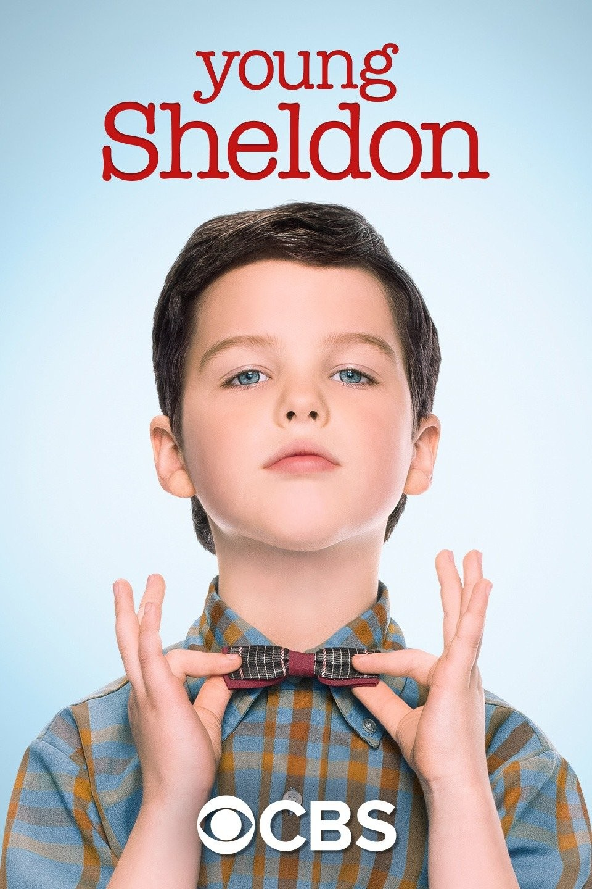

SITCOM
Fresh Prince Of Bel Air
The series stars Will Smith as a fictionalized version of same name, a street-smart teenager born and raised in West Philadelphia who is sent to live with his wealthy uncle and aunt in Bel-Air, Los Angeles, where his lifestyle often clashes with that of his upper-class relatives..
Big Bang Theory
A woman who moves into an apartment across the hall from two brilliant but socially awkward physicists shows them how little they know about life outside of the laboratory. Sheldon Cooper is an insensitive, neurotic obsessive-compulsive who imposes his will on everyone around him and everyone indulges him

Young Sheldon
Young Sheldon is an American coming-of-age sitcom television series created by Chuck Lorre and Steven Molaro for CBS. The series is a spin-off prequel to The Big Bang Theory and chronicles the life of the character Sheldon Cooper as a child living with his family in East Texas.

Friends
Comedy series about a tight-knit group of friends living in Manhattan. It also covers their interactions with their families, their lovers, and various colleagues over a period of several years. The series opens with runaway bride Rachel Green, who has just abandoned her fiance Barry Farber at the altar.